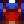

Seta común
| Seta común | |||||||||||||||||
| Con un ligero toque a frutos secos y buena textura. | |||||||||||||||||
| Información | |||||||||||||||||
| Origen | Recolección • Semillas otoñales • La Cueva | ||||||||||||||||
| Ubicación | Stardew Valley, incluye el Bosque secreto | ||||||||||||||||
| Estación | |||||||||||||||||
| Energía / Salud |
|
||||||||||||||||
| Precio de venta |
|
||||||||||||||||
|
|||||||||||||||||
La Seta común es un ítem recolectable que crece en Stardew Valley en Otoño. También se puede encontrar en el Bosque secreto en Primavera y Otoño, en la Granja forestal durante el Verano y en Isla Jengibre en el Lugar de excavación. También puede crecer a partir de Semillas otoñales o si se escogió la opción de las setas, crecerá dentro de La Cueva. Otra manera de obtenerla es talando algún Árbol seta.
Si se coloca una seta común en una Semilladora, esta generará entre 1-3 Semillas otoñales.
Regalos
| Reacciones de Aldeanos
| |
|---|---|
| Le gusta | |
| Neutral | |
| No le gusta | |
Lotes
La Seta común se requiere para el  Lote Recolección Otoñal en la Sala de manualidades.
Lote Recolección Otoñal en la Sala de manualidades.
Recetas
Cocina
| Imagen | Nombre | Descripción | Ingredientes | Energía / Salud | Bonificadores | Duración | Origen receta | Precio de venta | |||
|---|---|---|---|---|---|---|---|---|---|---|---|
| Setas salteadas | Orgánicas y aromáticas. |
|
|||||||||
| Sofrito | Verduras a la juliana sobre un lecho de arroz. | N/A | N/A |
|
|||||||
| Sopa Tom Kha | ¡Una combinación de sabores increíbles! |
|
Fabricación
| Imagen | Nombre | Descripción | Ingredientes | Origen de receta |
|---|---|---|---|---|
| Semillas Silvestres (Ot) (Semillas otoñales) |
Un surtido de semillas silvestres de otoño. |
|
Sastrería
La Seta común puede usarse en el carrete de la máquina de coser usando Tela en el alimentador para crear una  Camiseta. También puede ser utilizado como tinte de color naranja en la máquina de coser o en los tarros de tinta para cualquier prenda de vestir (teñible).
Misiones
- La Seta común puede ser solicitada aleatoriamente en Otoño en la tabla de anuncios "Necesito ayuda" afuera de la Tienda local Pierre's por una recompensa de
 120o y 150 puntos de Amistad.
120o y 150 puntos de Amistad. - 2-3 Setas comunes pueden ser solicitadas por el Siluro, la Perca, el Muyu o la Carpa de medianoche en el Estanque de peces para incrementar la capacidad del estanque de 3 a 5 peces.
Curiosidades
- Las Setas comunes son los únicos ítems comestibles de Otoño que se pueden colocar directamente en la Semilladora.
Historial
- 1.4: Ahora puede ser usada en la máquina de coser. Ahora es solicitada en una misión para el Estanque de peces.
- 1.5: Ahora puede ser encontrado en Isla Jengibre en el Lugar de excavación.